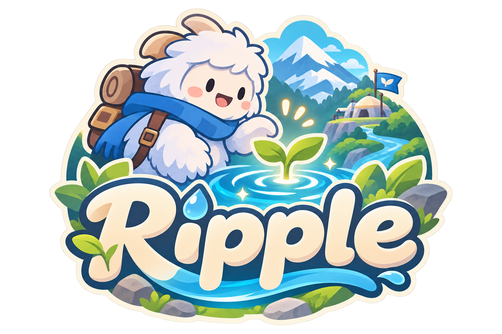
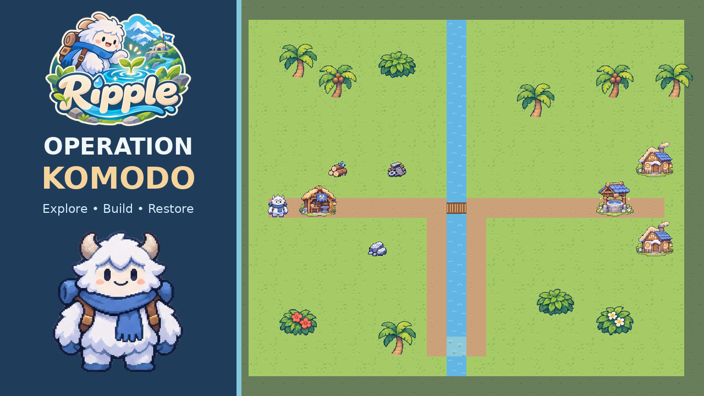

Small Actions. Big Impact.
Resource preview · Sui Testnet prototype specification
Asset Lab
HUD dinamis, inventory, map, animasi, dan SFX.
Audio Lab v2
17 musik, ambience, dan efek suara.
Brand guide
Nama, logo, icon, warna, dan aturan integrasi.
